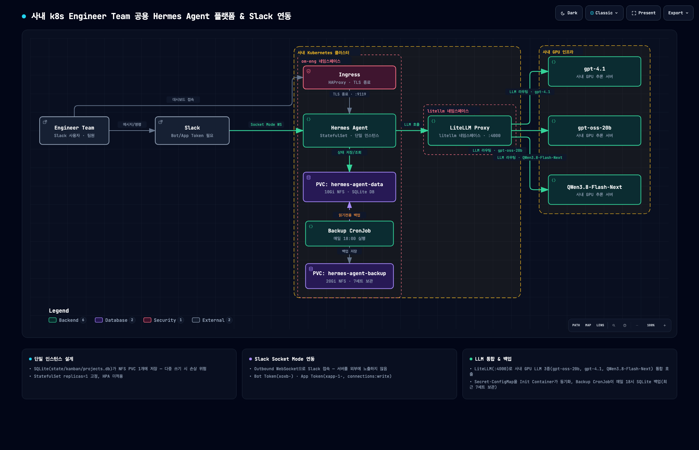
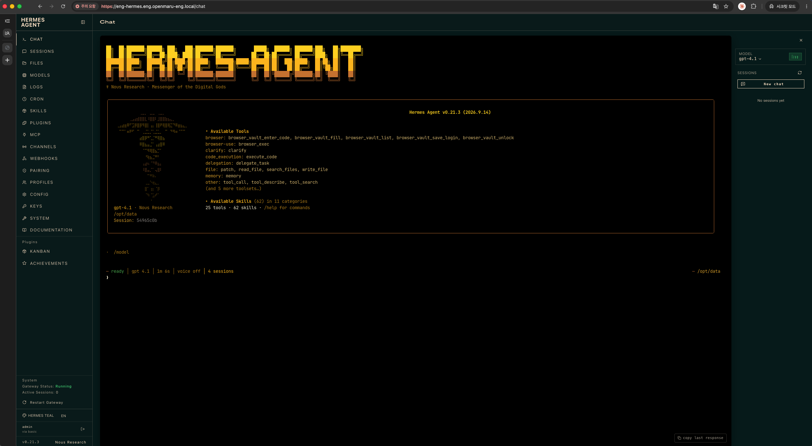
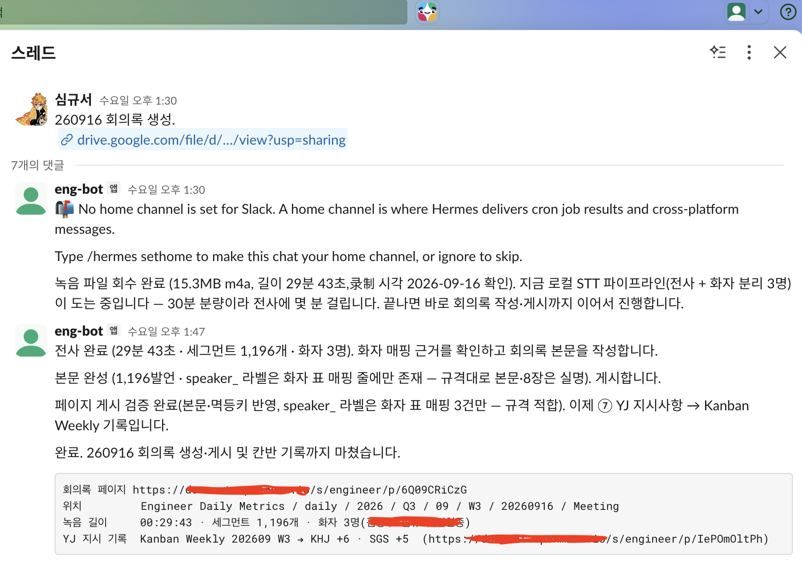

- 개요
-
- Engineer Team에서 엔지니어별로 Claude ChatGPT 등 생성형 AI 도구를 개별 사용하던 환경으로 개인 단위 생산성은 확보되나 AI 환경·프롬프트가 엔지니어마다 상이하고 업무 자동화 Skill도 개인 환경에 분산되어 팀 자산으로 축적되기 어려운 구조적 문제 존재.
- 사내 GPU 서버에 구축된 LLM 모델을 특정 사용자·인터페이스에 한정하지 않고 Engineer Team 전체가 공용 활용할 수 있는 통합 AI Agent 환경 필요에 따라 사내 Kubernetes 클러스터에 팀 공용 Hermes Agent 구축 및 Slack Bot 연동.
- Hermes Agent를 선택한 핵심 이유는 하나의 Agent 환경에서 LLM 연결·Skill 실행·대화 세션 관리·외부 메신저 연동 등을 통합할 수 있다는 점. 특히 업무에 필요한 반복 절차를 Skill 형태로 구현해 공용 배포함으로써 개인의 AI 활용 노하우를 팀의 재사용 가능한 기술 자산으로 전환할 수 있다고 판단.
- 사내 LLM과 외부 AI 모델을 하나의 Agent 인터페이스에서 활용하고 반복 엔지니어링 업무를 Skill로 표준화해 팀원 누구나 재사용 가능하도록 하는 것을 핵심 목표로 설정 Slack 연결을 통해 별도 접속 환경 없이 24시간 기존 협업 환경에서 Agent 호출이 가능하도록 구성.
- 역할
-
- 플랫폼 엔지니어 및 AI-Engineer(사내 k8s 클러스터에 Hermes Agent StatefulSet 배포 및 Hermes Agent Local LLM 모델 연동)
- Slack Bot과 연동하여 24시간 내내 언제 어디서든 Engineer 팀 공용으로 Hermes Agent에 등록된 Skill Cron 등을 공용 자산으로 축적할 수 있게 함
- 성과
-
- AS-ISAI 도구의 개인화·파편화 — 엔지니어마다 Claude ChatGPT 등을 개별적으로 사용하여 프롬프트 활용 방법 업무 노하우가 개인 단위에 머무르는 문제.
- AS-ISSkill·Cron 자산의 분산 — 각 엔지니어가 만든 자동화 Skill Cron과 Prompt가 개인 PC 또는 개별 환경에 존재하여 팀원 간 공유·재사용이 어려운 구조.
- AS-IS업무 방식의 비표준화 — 동일한 반복 업무도 엔지니어마다 다른 방식으로 AI를 활용하여 결과 품질과 업무 절차 표준화가 어려운 구조.
- AS-IS지속적인 Agent 실행 환경 부족 — 개인 PC 기반 AI 도구는 사용자의 PC 상태와 실행 여부 기억 메모리·토큰에 영향을 받아 팀 공용 서비스 형태로 상시 제공이 어려운 구조.
- TO-BE개인별로 파편화되어 있던 AI 활용 환경과 Skill·Cron을 Engineer Team 공용 Hermes Agent로 통합하고 Slack을 통해 언제든 접근 가능한 상시 운영형 AI 엔지니어링 비서 환경 구축으로 업무 효율성 제고.
- TO-BE24시간 사용 가능한 Engineer Team 공용 AI 비서 구축 — 사내 k8s 클러스터에서 Hermes Agent를 상시 운영하여 개인 PC 실행 여부와 관계없이 팀원들이 필요할 때 언제든 AI Agent를 사용할 수 있는 환경 구성.
- TO-BESlack 기반 접근성 향상 — 별도의 AI 서비스 화면에 접속하지 않고 팀에서 사용 중인 Slack을 통해 Hermes Agent를 호출하여 업무 흐름을 끊지 않고 AI를 활용할 수 있는 환경 마련.
- TO-BEAI Skill의 팀 자산화 — 개인별로 분산되던 Prompt와 업무 자동화 로직을 Hermes Skill로 관리할 수 있는 기반 마련으로 팀 공용 재사용 가능.
- TO-BE사내 LLM의 활용 범위 확대 — GPU 서버에 배포된 LLM 모델을 Hermes Agent의 모델 Provider와 연결하여 특정 사용자에 한정되지 않는 Engineer Team 공통 활용 인터페이스 구축.
- 개선점
-
- 사용 빈도에 비례해 조직의 업무 절차와 지식이 축적되는 구조로 Skill·Cron 자산화를 위한 지속적이고 적극적인 활용 필요.
- 프로젝트 아키텍처 (Archify 스킬)
-

-

-

-
- 테스트 및 기술정리